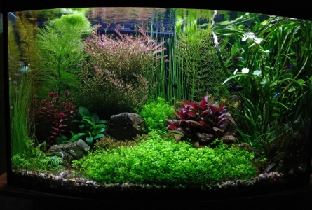

Аква
Акваріум дістався несподівано. Виявилося, що куми давно хочуть позбавитися акваріума – він стояв у квартирі, яку здавали. А акваріум, за яким треба хоч мінімально доглядати, ускладнював пошук квартирантів. З іншого боку я у шкільні роки тримав рибок и вважав себе за доволі досвідченого акваріуміста. Та й для дітей це розвага та навчання відповідальності й компроміс між «заведемо собачку».